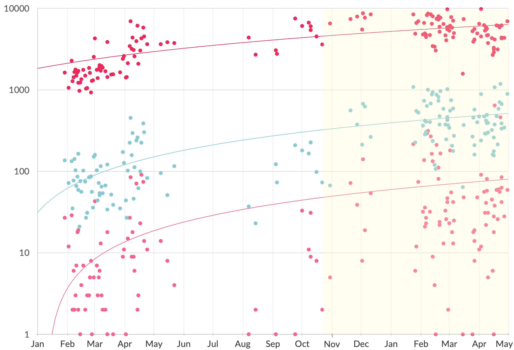

Introduction //
Sex education in schools isn't hitting the spot.
Fewer than half of U.S. high schools are providing sexual health information deemed “essential” by the CDC for healthy young people (Planned Parenthood, 2020).
- As of March 2020, sex and HIV education in U.S. public schools is only required to be taught in 27 states, and only 17 states require that the information be medically accurate.
- Only 9 states require instruction that is culturally appropriate and that is not biased against any race, sex or ethnicity. Three states prohibit promotion of religion.
- Many states involve parents in sex education, with 36 states allowing them to opt their student(s) out of instruction. Five states require parent consent for any sex or HIV education.
Sexual minority and marginalized populations bear the brunt of negative health outcomes.
At vero eos et accusamus et iusto odio dignissimos ducimus qui blanditiis praesentium voluptatum deleniti atque corrupti quos dolores et quas molestias excepturi sint occaecati cupiditate non provident, similique sunt in culpa qui officia deserunt mollitia animi, id est laborum et dolorum fuga.
Intervention //
Enter: The Sex Wrap
Created and hosted by Drs. Andrew Porter and Spring Cooper, The Sex Wrap (TSW) is a free multimedia sexual health podcast educating its followers on sexual health and ancillary themes including sexuality, relationships, and communication. The Sex Wrap directly addresses the knowledge gaps left by institutionalized sex education to reduce stigma surrounding sexual health and wellbeing.
- Virtually all episode topics are based on listener-submitted questions to tackle the audience’s most relevant and pressing inquiries head-on.
- Episode content explicitly caters to sexual minority and marginalized populations.
"For anything you were too afraid to ask at home, too embarrassed to ask at school, or was just too hard to ask your partner."
Theme and content analysis of TSW’s podcast titles reveal that the episodes provide comprehensive and minority-inclusive sexual health information:
Health communication //
When was the last time you learned something from a meme?
With internet memes becoming a driving cultural force among young adults, The Sex Wrap takes advantage of its Instagram social media presence to effectively stage online health-based social marketing.
- Memes are an intuitive form of online communication that triggers engagement by virtue of relatability.
- Meme communication impacts the user’s identity, self-concept, and self-awareness (Yus, 2018).
- The Sex Wrap capitalizes on memes’ shareability and virality to disseminate sexual health information beyond the scope of TSW’s follower- and listenership.
Breakdown of The Sex Wrap's original content.
The Sex Wrap’s Instagram account repackages the evidence-based sexual health information from the podcast as branded original content, reaching an audience of over 32,000 followers.
On average, memes outperform all other types of original content in discovery and interactivity metrics:
Recommendations //
The future of social media-based health interventions
The memeification of evidence-based sexual health information has been successful in furthering The Sex Wrap as a sexual health intervention; integrating meme communication with social marketing theory to increase reach and engagement of sexual health messaging.
- Meme communication gets its humor from relatability, which translates to shareability, thus broadening the reach of health-related messaging.
- Regular posting fosters a sense of community and maintains relevance in social media feed algorithms.
- Consistent branding to distinguish original content is imperative in the oversaturated world of social media.